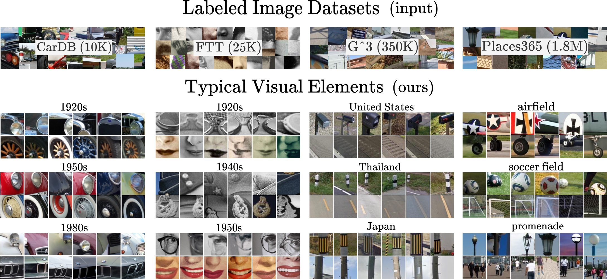

Shiry Ginosar
I am an Assistant Professor at TTIC and a Visiting Faculty Researcher at Google DeepMind.
Previously, I was a postdoctoral fellow at the Simons Institute for the Theory of Computing and a Computing Innovation postdoctoral fellow at UC Berkeley, advised by Jitendra Malik. I completed my Ph.D. in Computer Science at UC Berkeley under the supervision of Alyosha Efros. Before joining the Computer Vision group, I was part of Bjoern Hartmann's Human-Computer Interaction lab at Berkeley. Earlier in my career, I was a Visiting Scholar at the CS Department of Carnegie Mellon University with Luis von Ahn and Manuel Blum in Human Computation. Between my academic roles, I spent four years at Endeca as a Senior Software Engineer. In the distant past, I trained fighter pilots in F-4 Phantom flight simulators as a Staff Sergeant in the Israeli Air Force.
My research has been covered by The New Yorker, The Wall Street Journal, and the Washington Post, amongst others. My work has been featured on PBS NOVA, exhibited at the Israeli Design Museum and is part of the permanent collection of the Deutsches Museum. My patent-pending research work inspired the founding of Sway, a startup acquired by Roblox. I have been named a Rising Star in EECS, and am a recipient of the U.S. National Science Foundation Graduate Research Fellowship, the California Legislature Grant for graduate studies, and the Samuel Silver Memorial Scholarship Award for combining intellectual achievement in science and engineering with serious humanistic and cultural interests.
News
I joined TTIC as an assistant professor!
I recently organized a Summer Cluster at the Simons Institute for the Theory of Computing at UC Berkeley on studying intelligence from a fundamental scientific viewpoint, bringing together top AI, Psychology, and Neuroscience researchers. Talk recordings:
Recent Talks
- What is the right "token" for next-token visual prediction?
- Social behavior prediction from video observations.
Selected Publications
See Google Scholar for the full list.
-
Synergy and Synchrony in Couple Dances
How does social interaction influence one's behavior?
We focus our analysis on motion behavior during Swing, a couples-dance genre with tight physical coupling, for which we present an in-the-wild video dataset. We demonstrate that single-person future motion prediction in this context is challenging. Instead, we observe that prediction greatly benefits from considering the interaction partners' behavior.Vongani Maluleke, Lea Müller, Jathushan Rajasegaran, Georgios Pavlakos, Shiry Ginosar, Angjoo Kanazawa, and Jitendra Malik. Synergy and Synchrony in Couple Dance, In submission. PDF, Project Page
-
Gaussian Splatting for Masked Autoencoders
3D Gaussians as a learned mid-level image representation.
We present the first method to employ 3D Gaussian primitives in an image representation learning framework trained on large image datasets. Our learning-based method starkly contrasts with the current usage of Gaussian splatting, which is restricted to optimization-based single-scene reconstructions.Jathushan Rajasegaran, Xinlei Chen, Ruilong Li, Christoph Feichtenhofer, Shiry Ginosar, and Jitendra Malik. Gaussian Splatting for Masked Autoencoders, In submission. The talk I gave at the Simons Institute at Berkeley.
-

KiVA: Kid-inspired Visual Analogies for LMMs
A benchmark for visual analogies inspired by developmental psychology.
We present a benchmark that closes a critical gap in current benchmarks for foundational models - visual analogical reasoning, which even young children can do but in which large multimodal models perform poorly.Eunice Yiu, Maan Qraitem, Anisa Noor Majhi, Charlie Rose Wong, Yutong Bai, Shiry Ginosar, Alison Gopnik, and Kate Saenko. KiVA: Kid-inspired Visual Analogies for Large Multimodal Models, In submission. PDF, Benchmark
-

Diffusion Models as Data Mining Tools
Image synthesis models can be used for visual data mining!
Central insight: Since generative models learn an accurate representation of their training data, we can use them to summarize the data by mining for visual patterns.
Our analysis-by-synthesis approach to data mining has two key advantages. First, it scales much better than traditional correspondence-based approaches, as it does not require explicitly comparing all pairs of visual elements. Second, while most previous works on visual data mining focus on a single dataset, our approach works on diverse datasets in terms of content and scale. Furthermore, our approach allows for translating visual elements across class labels and analyzing consistent changes, opening up new possibilities for data mining in the future.Ioannis Siglidis, Aleksander Holynski, Alexei A. Efros, Mathieu Aubry, and Shiry Ginosar. Diffusion Models as Data Mining Tools, ECCV 2024. PDF, Project Page
-
Pose Priors from Language Models
Improving pose estimates involving physical contact using LMMs.
Central insight: An LLM can tell you, e.g., that to hug someone, your arm should go on their neck, shoulder, waist, or bottom—but probably not on their knee... And all of this knowledge comes from detailed descriptions of physical contact in books!
We leverage this insight to improve pose estimation by converting natural language descriptors, generated by a large multimodal model (LMM), into tractable losses to constrain 3D pose optimization.Sanjay Subramanian, Evonne Ng, Lea Müller Dan Klein, Shiry Ginosar, and Trevor Darrell. Pose Priors from Language Models, In submission. PDF, Project Page
-

Can Language Models Learn to Listen?
Squeezing lexical semantic "juice" out of large language models.
Given only the spoken text of a speaker, we synthesize a realistic, synchronous listener. Our text-based model responds in an emotionally-appropriate manner when lexical semantics is crucial. For example, when it is not appropriate to smile despite a speaker's uneasy laughter. Technically, we squeeze out as much semantic "juice" as possible from a pretrained large language model by finetuning it to autoregressively generate realistic 3D listener motion in response to the input transcript.
Main innovation: We treat atomic gesture elements as novel language tokens easily ingestible by language models. We can then finetune LLMs to synthesize motion by predicting sequences of these elements.Evonne Ng*, Sanjay Subramanian*, Dan Klein, Angjoo Kanazawa, Trevor Darrell, and Shiry Ginosar. Can Language Models Learn to Listen?, ICCV 2023. PDF, Video, Project Page
-
Historical image analysis
A unified approach to historical watermark recognition, and repeated-pattern detection in artwork collections.
We explore two applications of computer vision to analyze historical data: watermark recognition and one-shot repeated pattern detection in artwork collections. Both problems present computer vision challenges, which are representative of the ones encountered in cultural heritage applications: limited supervision is available, the tasks are fine-grained recognition, and the data comes in several different modalities. We use a single method for both tasks: we define an image similarity score based on geometric verification of mid-level features and show how spatial consistency can be used to fine-tune out-of-the-box features for the target dataset with weak or no supervision.Xi Shen, Robin Champenois, Shiry Ginosar, Ilaria Pastrolin, Morgane Rousselot, Oumayma Bounou, Tom Monnier, Spyros Gidaris, François Bougard, Pierre-Guillaume Raverdy, Marie-Françoise Limon, Christine Bénévent, Marc Smith, Olivier Poncet, K. Bender, Béatrice Joyeux-Prunel, Elizabeth Honig, Alexei A. Efros, and Mathieu Aubry. Spatially-consistent Feature Matching and Learning for Heritage Image Analysis, IJCV 2022. PDF, Project Page
-

Learning2Listen
Learning to respond like a good listener.
Given a speaker, we synthesize a realistic, synchronous listener. To do this, we learn human interaction 101: the delicate dance of non-verbal communication. We expect good listeners to look us in the eye, synchronize their motion with ours, and mirror our emotions. You can't annotate this! So we must learn from raw data. Technically, we are the first to extend vector-quantization methods to motion synthesis. We show that our novel sequence-encoding VQ-VAE, coupled with a transformer-based prediction mechanism, performs much better than competitive methods for motion generation.Evonne Ng, Hanbyul Joo, Liwen Hu, Hao Li, Trevor Darrell, Angjoo Kanazawa, and Shiry Ginosar. Learning to Listen: Modeling Non-Deterministic Dyadic Facial Motion, CVPR 2022. PDF, Video, Project Page
-
Audio-Conditioned Contrastive Video Textures
Learning to synthesize video textures conditioned on audio
We learn a representation for creating video textures using contrastive learning between the frames of a video and the associated audio.Medhini Narasimhan, Shiry Ginosar, Andrew Owens, Alexei A. Efros, and Trevor Darrell. Strumming to the Beat: Audio-Conditioned Contrastive Video Textures, WACV 2022. Best Paper Honorable Mention (Oral). PDF, Project Page
-

Body2Hands
Learning to Infer 3D Hands from Conversational Gesture Body Dynamics.
A novel learned deep prior of body motion for 3D hand shape synthesis and estimation in the domain of conversational gestures. Our model builds upon the insight that body motion and hand gestures are strongly correlated in non-verbal communication settings. We formulate the learning of this prior as a prediction task of 3D hand shape given body motion input alone.Evonne Ng, Shiry Ginosar, Trevor Darrell and Hanbyul Joo. Body2Hands: Learning to Infer 3D Hands from Conversational Gesture Body Dynamics, CVPR 2021. PDF, Video, Project Page
-
Modeling Visual Minutiae: Gestures, Styles, and Temporal Patterns
Ph.D. Dissertation.
-

Learning to Factorize and Relight a City
Disentangle changing factors from permanent ones.
We disentangle outdoor scenes into temporally-varying illumination and permanent scene factors. To facilitate training, we assemble a city-scale dataset of outdoor timelapse imagery from Google Street View Time Machine, where the same locations are captured repeatedly through time. Our learned disentangled factors can be used to manipulate novel images in realistic ways, such as changing lighting effects and scene geometry.Andrew Liu, Shiry Ginosar, Tinghui Zhou, Alexei A. Efros and Noah Snavely. Learning to Factorize and Relight a City, ECCV 2020. PDF, Video, Project Page
@inproceedings{Liu2020city,
author = {Liu, Andrew and Ginosar, Shiry and Zhou, Tinghui and Snavely, Noah and Efros, Alexei A.},
title = {Learning to Factorize and Relight a City},
booktitle = {European Conference on Computer Vision (ECCV)},
year = 2020,
} -

Learning Individual Styles of Conversational Gesture
Audio to motion translation.
Shiry Ginosar*, Amir Bar*, Gefen Kohavi, Caroline Chan, Andrew Owens and Jitendra Malik. Learning Individual Styles of Conversational Gesture, CVPR 2019. PDF, Project Page
Human speech is often accompanied by hand and arm gestures. Given audio speech input, we generate plausible gestures to go along with the sound. Specifically, we perform cross-modal translation from ``in-the-wild'' monologue speech of a single speaker to their hand and arm motion. We train on unlabeled videos for which we only have noisy pseudo ground truth from an automatic pose detection system. We release a large video dataset of person-specific gestures.@inproceedings{ginosar2019,
title={Learning Individual Styles of Conversational Gesture},
author={Ginosar, Shiry and Bar, Amir and Kohavi, Gefen and Chan, Caroline and Owens, Andrew and Malik, Jitendra},
booktitle={Computer Vision and Pattern Recognition (CVPR)},
year={2019}
} -

Everybody Dance Now!
"Do as I do" motion transfer.
Given a source video of a person dancing we can transfer that performance to a novel (amateur) target after only a few minutes of the target subject performing standard moves. We pose this problem as a per-frame image-to-image translation with spatio-temporal smoothing. Using pose detections as an intermediate representation between source and target, we learn a mapping from pose images to a target subject's appearance. We adapt this setup for temporally coherent video generation including realistic face synthesis.Caroline Chan, Shiry Ginosar, Tinghui Zhou and Alexei A. Efros. Everybody Dance Now, ICCV 2019. PDF, Video, Project Page, Check out the Sway: Magic Dance App!
@inproceedings{Chan2019dance,
author = {Chan, Caroline and Ginosar, Shiry and Zhou, Tinghui and Efros, Alexei A.},
title = {Everybody Dance Now},
booktitle = {IEEE International Conference on Computer Vision (ICCV)},
year = 2019,
} -
The Burgeoning Computer-Art Symbiosis
"Computers help us understand art. Art helps us teach computers."
Shiry Ginosar, Xi Shen, Karan Dwivedi, Elizabeth Honig, and Mathieu Aubry. The Burgeoning Computer-Art Symbiosis, XRDS: Crossroads, The ACM Magazine for Students - Computers and Art archive Volume 24 Issue 3, Spring 2018, Pages 30-33. PDF
@article{ginosar2018art,
author = {Ginosar, Shiry and Shen, Xi and Dwivedi, Karan and Honig, Elizabeth and Aubry, Mathieu},
title = {The Burgeoning Computer-art Symbiosis},
journal = {XRDS},
issue_date = {Spring 2018},
volume = {24},
number = {3},
month = apr,
year = {2018},
issn = {1528-4972},
pages = {30--33},
numpages = {4},
url = {http://doi.acm.org/10.1145/3186655},
doi = {10.1145/3186655},
acmid = {3186655},
publisher = {ACM},
address = {New York, NY, USA},
} -
A Century of Portraits
"What makes the 60's look like the 60's?"
Many details about our world are not captured in written records because they are too mundane or too abstract to describe in words. Fortunately, since the invention of the camera, an ever-increasing number of photographs capture much of this otherwise lost information. This plethora of artifacts documenting our “visual culture” is a treasure trove of knowledge as yet untapped by historians. We present a dataset of 37,921 frontal-facing American high school yearbook photos that allow us to use computation to glimpse into the historical visual record too voluminous to be evaluated manually. The collected portraits provide a constant visual frame of reference with varying content. We can therefore use them to consider issues such as a decade’s defining style elements, or trends in fashion and social norms over time.Shiry Ginosar, Kate Rakelly, Sarah Sachs, Brian Yin, Crystal Lee, Philipp Krähenbühl and Alexei A. Efros. A Century of Portraits: A Visual Historical Record of American High School Yearbooks, Extreme Imaging Workshop, ICCV 2015. and IEEE Transactions on Computational Imaging, September 2017. PDF, Project Page
@ARTICLE{ginosar2017yearbooks,
author={Ginosar, Shiry and Rakelly, Kate and Sachs, Sarah M. and Yin, Brian and Lee, Crystal and Krähenbühl, Philipp and Efros, Alexei A.},
journal={IEEE Transactions on Computational Imaging},
title={A Century of Portraits: A Visual Historical Record of American High School Yearbooks},
year={2017},
volume={3},
number={3},
pages={421-431},
keywords={Data mining;Face;Imaging;Market research;Sociology;Statistics;Visualization;Data mining;deep learning;historical data;image dating},
doi={10.1109/TCI.2017.2699865},
month={Sept}
} -
Object Detection in Abstract Art
The human visual system is just as good at recognizing objects in paintings and other abstract depictions as it is recognizing objects in their natural form. Computer vision methods can also recognize objects outside of natural images, however their model of the visual world may not always align with the human one. If the goal of computer vision is to mimic the human visual system, then we must strive to align detection models with the human one. We propose to use Picasso's Cubist paintings to test whether detection methods mimic the human invariance to object fragmentation and part re-organization. We find that while humans significantly outperform current methods, human perception and part-based object models exhibit a similarly graceful degradation as abstraction increases, further corroborating the theory of part-based object representation in the brain.
Shiry Ginosar, Daniel Haas, Timothy Brown, and Jitendra Malik. Detecting People in Cubist Art, Visart Workshop on Computer Vision for Art Analysis, ECCV 2014. PDF
@incollection{ginosar2014detecting,
title={Detecting people in Cubist art},
author={Ginosar, Shiry and Haas, Daniel and Brown, Timothy and Malik, Jitendra},
booktitle={Computer Vision-ECCV 2014 Workshops},
pages={101--116},
year={2014},
publisher={Springer International Publishing}
} -

Using Speech Recognition in Information Intensive Tasks
Speech input is growing in importance, especially in mobile applications, but less research has been done on speech input for information intensive tasks like document editing and coding. This paper presents results of a study on the use of a modern publicly available speech recognition system on document coding.
Shiry Ginosar, and Marti A. Hearst. A Study of the Use of Current Speech Recognition in an Information Intensive Task, Workshop on Designing Speech and Language Interactions, CHI 2014. PDF
-
Editable Code Histories
An IDE extension that helps with the task of authoring multi-stage code examples by allowing the author to propagate changes (insertions, deletions and modifications) throughout multiple saved stages of their code.
Shiry Ginosar, Luis Fernando De Pombo, Maneesh Agrawala, and Bjoern Hartmann. Authoring Multi-Stage Code Examples with Editable Code Histories, UIST 2013. PDF, Video
@inproceedings{ginosar2013authoring,
title={Authoring multi-stage code examples with editable code histories},
author={Ginosar, Shiry and Pombo, De and Fernando, Luis and Agrawala, Maneesh and Hartmann, Bjorn},
booktitle={Proceedings of the 26th annual ACM symposium on User interface software and technology},
pages={485--494},
year={2013},
organization={ACM}
} -

Crowdsourced Data Analysis
A system that lets analysts use paid crowd workers to explore data sets and helps analysts interactively examine and build upon workers' insights.
Wesley Willett, Shiry Ginosar, Avital Steinitz, Bjoern Hartmann, and Maneesh Agrawala. Identifying Redundancy and Exposing Provenance in Crowdsourced Data Analysis, IEEE Transactions on Visualization and Computer Graphics, 2013. PDF
@article{willett2013identifying,
title={Identifying Redundancy and Exposing Provenance in Crowdsourced Data Analysis},
author={Willett, Wesley and Ginosar, Shiry and Steinitz, Avital and Hartmann, Bjorn and Agrawala, Maneesh},
journal={Visualization and Computer Graphics, IEEE Transactions on},
volume={19},
number={12},
pages={2198--2206},
year={2013},
publisher={IEEE}
} -

Phetch - A Human Computation Game
Phetch is an online game which collects natural language descriptions for images on the web as a side effect of game play. Can be used to improve the accessibility of the web as well as improve upon current image search engines.
Shiry Ginosar, Human Computation for HCIR Evaluation, Proceedings, HCIR 2007, pp. 40-42. PDF
Luis von Ahn, Shiry Ginosar, Mihir Kedia, and Manuel Blum. Improving Image Search with Phetch, ICASSP 2007. PDF,
@inproceedings{von2007improving,
title={Improving image search with phetch},
author={Von Ahn, Luis and Ginosar, Shiry and Kedia, Mihir and Blum, Manuel},
booktitle={Acoustics, speech and signal processing, 2007. icassp 2007. ieee international conference on},
volume={4},
pages={IV--1209},
year={2007},
organization={IEEE}
}Luis von Ahn, Shiry Ginosar, Mihir Kedia, Ruoran Liu, and Manuel Blum. Improving Accessibility of the Web with a Computer Game, CHI 2006. Honorable mentioned paper and nominee for Best of CHI award. PDF, Press Coverage
@inproceedings{von2006improving,
title={Improving accessibility of the web with a computer game},
author={Von Ahn, Luis and Ginosar, Shiry and Kedia, Mihir and Liu, Ruoran and Blum, Manuel},
booktitle={Proceedings of the SIGCHI conference on Human Factors in computing systems},
pages={79--82},
year={2006},
organization={ACM}
}
Other Projects
-
H20-IQ
A tablet-controlled, solar-powered drip irrigation system. A humidity sensor at the tip of each "spike" records soil moisture; an internal servo in the 3D-printed enclosure opens and closes a drip irrigation line valve. Individual devices in a garden communicate with a central garden server, which also acts as a webserver that hosts the HTML-based user interface. Gardeners can review graphs of humidity readings over time and adjust waterning plans through this Web application.
Joint class project with Valkyrie Savage and Mark Fuge.
Featured in Bjoern Hartmann and Paul K. Wright Designing Bespoke Interactive Devices, IEEE Computer August 2013, Volume 46, Number 8. Article
Teaching
Co-Teacher and GSI, Image Manipulation and Computational Photography, Fall 2018GSI, Image Manipulation and Computational Photography, Fall 2014
Undergraduate and MA Researchers
I am actively looking for exceptional undergraduate students in their third year of the U Chicago CS program who have excelled in the Machine Learning and/or Computer Vision classes. If you are interested in a research position and think you are qualified, do send me a note!
- Former Students
- Vivien Nguyen (Now @ Princeton)
- Varsha Ramakrishnan
- Gefen Kohavi
- Caroline Mai Chan (Now @ MIT)
- Hemang Jeetendra Jangle
- Daniel Tsai
- Crystal Lee
- Kate Rakelly (Now @ UC Berkeley)
- Brian Yin
- Sarah Sachs
- Timothy Brown
- Luis Fernando de Pombo